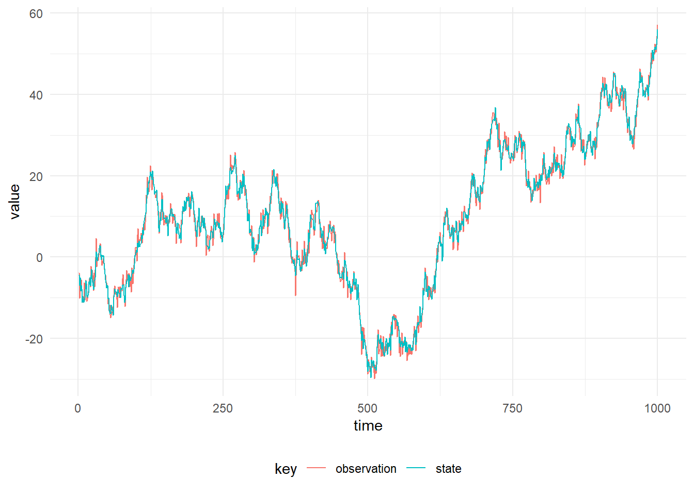

DLMs are represented as a case class containing the observation matrix and the system matrix:
import com.github.jonnylaw.dlm._
import breeze.linalg.{DenseMatrix, DenseVector}
case class Model(
f: Double => DenseMatrix[Double],
g: Double => DenseMatrix[Double]
)The object Dlm contains functions to build several common models:
val linear = Dlm.polynomial(1)
val seasonal = Dlm.seasonal(period = 24, harmonics = 3)val x: Array[Dlm.Data] = ??? // timeseries to regress against
val regression = Dlm.regression(x = x)These simple models can be composed to produce more complex models, for instance a seasonal model with a linear trend can be produced:
import cats.implicits._
val seasonalTrend = linear |+| seasonalThe models can also be combined using a cartesian product in order to model multivariate time series:
// model for a bivariate time series
val multivariateModel = linear |*| seasonalTrend
// model for 30 seemingly unrelated time series
val sutse = List.fill(30)(linear).reduce(_ |*| _)A dynamic generalised linear model is a DLM with a non-Gaussian observation distribution. The observation distribution is from the Exponential family, although extensions can be made to incorporate the Student’s t-distribution from the location-scale family.
To build a DGLM, first build a univariate DLM as above then select an observation model from the Dglm object:
val poisson = Dglm.poisson(linear)Simulation is useful to test inference algorithms or to get a feel for how a model behaves with different sets of parameters. First we must define the model Parameters:
val p = DlmParameters(
v = DenseMatrix(1.0),
w = DenseMatrix(3.0),
m0 = DenseVector(0.0),
c0 = DenseMatrix(10.0)
)Then we can simulate from the model:
val data = Dlm.simulateRegular(linear, p, 1.0).
steps.
take(1000)
Simulation from any DLM is possible using the same syntax. The parameters must be appropriate for the model, for instance the latent-state of a seasonal model has dimension of twice the number of harmonics in the model, hence m0, c0 and w must be of the same dimension.
In order to simulate from a DGLM we must know how to sample from the chosen observation distribution of the DGLM. The Dglm.Model class and its associated model building functions provide this function and an associated simulate function. The figure below shows a simulation from the Poisson model.
Dglm.simulateRegular(poisson, p, 1.0)Simulation from the poisson DGLM with \((W, m_0, C_0) = (0.01, 0.0, 1.0)\)
Note that the Poisson distribution has only one parameter, the rate and hence v in the DlmParameters specification is unused. For observation distributions with additional parameters, then the v is used for this purpose.